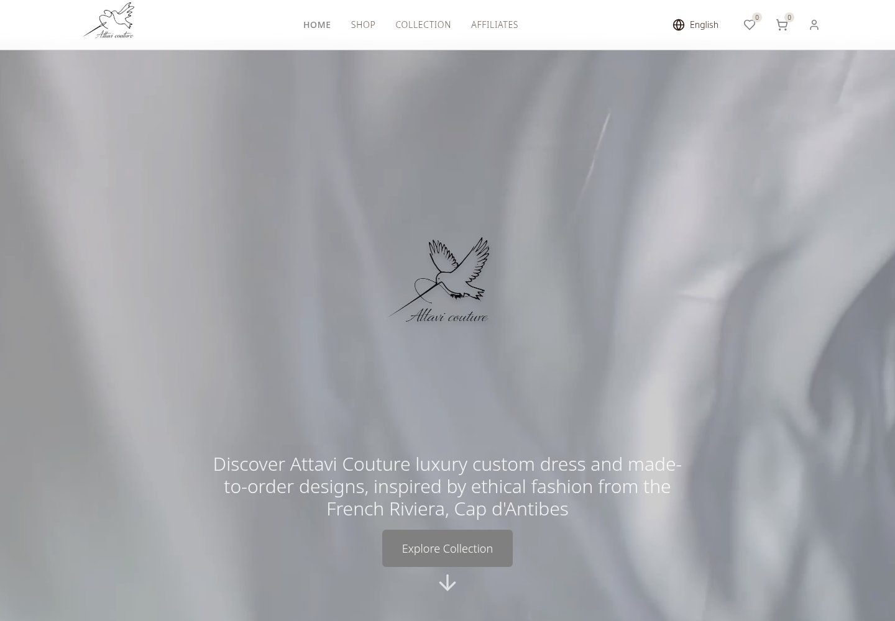
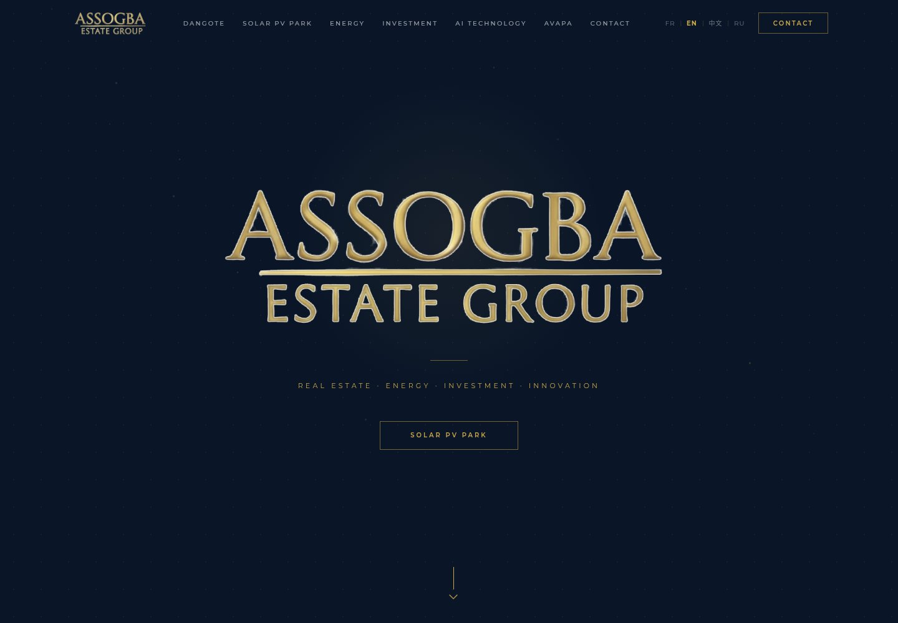

Attavi Couture
I built the company website during my summer internship, creating an online home for the couture brand and its work.
Web development internVisit website ↗
SOFTWARE ENGINEERING & CYBERSECURITY
I’m Ridjan, an Epitech student building desktop tools, full-stack apps, and security experiments. Usually on Linux. Always asking how it works.
developer. builder. lifelong learner.▍
01 / REAL-WORLD EXPERIENCE
Two company websites. A summer of turning real needs into something people can use.

I built the company website during my summer internship, creating an online home for the couture brand and its work.

I built the group’s website during my summer internship, giving its business and activities a dedicated web presence.
02 / SELECTED PROJECTS
From a voice on the desktop to pixels on a GPU. A selection of things I’ve made, explored, and learned from.
Exploring how brands appear in AI answers, with analysis you can follow.
03 / THE PERSON BEHIND THE CODE
The interface is only the beginning. I like knowing what happens underneath.
I’m a software engineering student at Epitech. I move between native tools, full-stack applications, and security challenges—following the problem wherever it leads.
Building websites for real companies has added another perspective: software has to work for the people using it. That’s the part I want to keep getting better at.
C · Rust · Python · GTK · Linux
Native tools, graphics, voice, and automation.JavaScript · TypeScript · React · Node.js
APIs, MySQL, Dash, Plotly, and useful interfaces.CTFs · Reverse engineering · Web security
Ghidra, GDB, Burp Suite, and Wireshark.Git · Docker · GitHub Actions
Small iterations, reproducible setups, shared code.04 / THE CURIOSITY LAB
CTFs are where I learn to question assumptions, read unfamiliar code, and keep going when the obvious answer doesn’t work.
Reverse engineering a RISC-V challenge and untangling a cryptographic chess puzzle. Notes on the process, not just the answer.
Read the write-upsTeam experience across OwlSec, VoidSec, and Lil Leak.
A tiny terminal for a curious visitor.
Type help to look around. No commands leave this page.
OFF THE CLOCK
Featured playlist: Best of Anime Now 2025, curated by Spotify.
GOOD CONVERSATIONS START SOMEWHERE
A project, a collaboration, or a security puzzle you can’t stop thinking about. I’d like to hear about it.
joker4life@duck.com